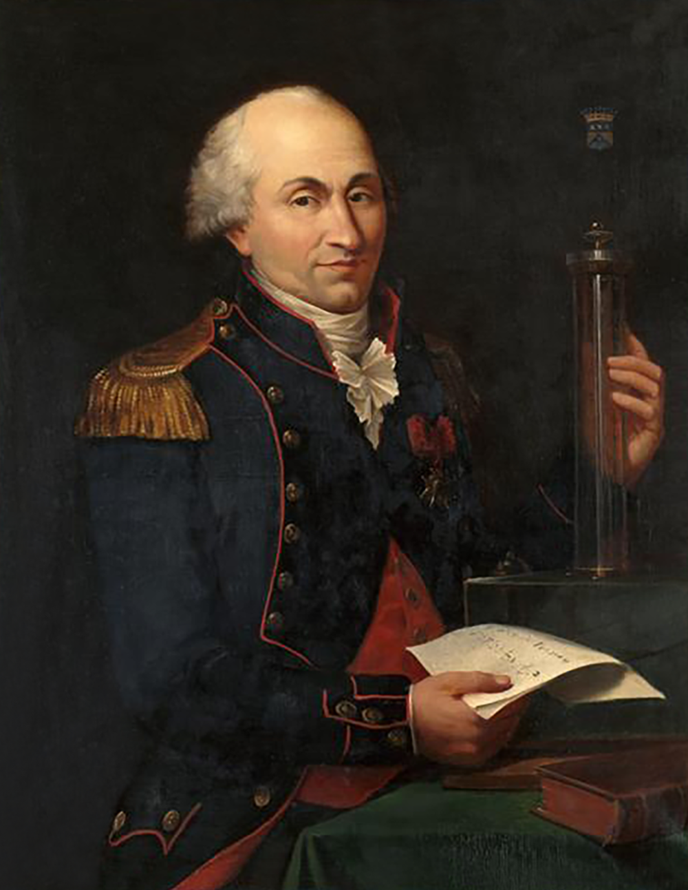
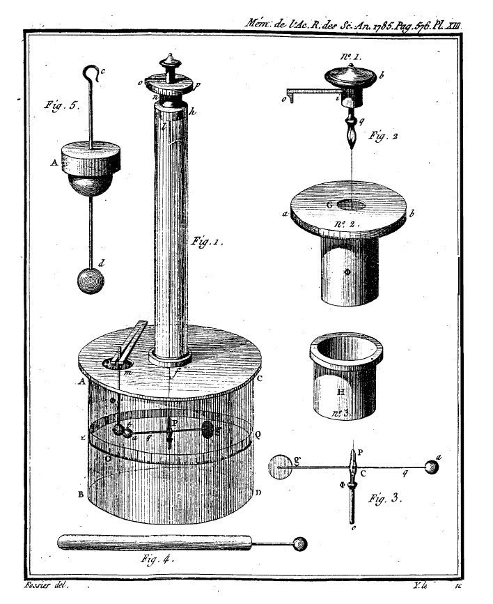
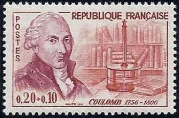

看得出多小的变化？
固定刻度分辨率时，丝越细，一个刻度对应的力越小。这里假设能分辨 1°，但实际最小可检测力还取决于气流、振动、漏电和读数噪声，不能只用刻度决定。
实验档案 / 巴黎 · 1785
两颗小球的静电力微弱到难以直接称量。
库仑用细银丝把它变成转角：既要看得出微小变化，也要量得准、承受得住。

工程师，也是实验物理学家
库仑生于法国昂古莱姆，曾任军事工程师，参与筑城并研究材料、摩擦和结构问题。细丝为什么会扭回去，怎样让微小的力留下可读的痕迹——这些工程经验，成为他设计电秤的基础。
肖像由 Louis Hierle 于 1894 年依 Hippolyte Lecomte 的作品摹绘，藏于凡尔赛宫（MV 5332 / RF 841）。画中可见扭秤与手稿；这是一幅后世肖像，并非 1785 年实验现场记录。法国文化部馆藏记录 · 图像来源与公有领域标记 · 法国工兵博物馆人物说明。

先让银丝成为一把尺
1784 年，库仑研究金属丝的扭转：在弹性范围内，扭得越多，回复力矩越大。1785 年，他用这条已经校准的关系，测量两颗带同种电的小球之间的斥力。
这篇第一论文检验的是同种电的斥力与距离的关系。现代的电子、电场强度定义和完整库仑公式，不能都归到这一次实验中。
先解决测量，再寻找规律
同一个小力，柔软的细丝转得多，较粗的丝转得少。把力增大，太灵敏的读数又可能超出窗口。
nN 是纳牛，1 nN = 10−9 N。本例取相同材料、长度和杆臂；丝径改变，扭转刚度按丝径的四次方变化。参考刚度来自论文中的校准值。指针为现代校准示意，不是带电两球的历史实验读数。
固定刻度分辨率时，丝越细，一个刻度对应的力越小。这里假设能分辨 1°，但实际最小可检测力还取决于气流、振动、漏电和读数噪声，不能只用刻度决定。
这里统一给出 60° 的观察窗口，较粗的丝可在窗口内读出更大的力。这是示例量程；真实上限还受弹性极限、断丝和装置几何限制，不能用 60° 当作历史断丝角度。
论文讨论了约 2–3° 的零点不确定性；这里用 2.5° 举例，并非给仪器做了现代精度认证。
小切向力 F 作用在杆臂 R 上，产生力矩 F R。在线弹性范围内，丝的回复力矩 τ = κθ；所以平衡时 θ = F R / κ。θ 是扭转角，κ 是扭转刚度，计算时角度用弧度。
对均匀圆截面丝，现代弹性模型给出 κ = GπD4/(32L)：G 为剪切模量，D 为丝径，L 为丝长。相同材料与长度下，丝径加倍，刚度变为 16 倍，同一个力引起的偏转只有原来的 1/16。
库仑确实研究过金属丝的扭转、弹性和材料强度。用今天的语言看，这涉及应力与应变：材料内部单位面积承受多大的作用，以及变形有多大。这里主要是剪切应力与剪切应变；不能把现代完整的应力—应变理论都归到他一人名下。
1784 年扭转与金属丝弹性原论文 ↗重做三次测量
先给两球充电。轻杆能自由旋转，银丝会阻止它继续转开。
玻璃罩、银丝、虫胶轻杆、髓质球与纸刻度依据原文重建；小球、银丝适度放大。金属表面、木质工作台与照明为历史风格的情境复原，并非原物外观的精确鉴定。过渡动画仅帮助观察，未模拟真实振动周期。滑动旋钮后进入假定力律的平衡模型；历史按钮重放原文读数。
上端反向拧了 β，下端向另一侧偏了 α。银丝两端相差的角度是两者相加。
θ = β + α
第二次：126° + 18° = 144°。总扭转是第一次 36° 的四倍；在小角度、力臂近似不变时，电力也约为四倍。
电斥力让轻杆转开，银丝的回复力矩把它扭回来。两种力矩平衡，角度才稳定。
电力 × 垂直力臂 = 银丝回复力矩
红箭头沿两球连线，是小球受到的电力；蓝色弧线表示银丝的回复方向。箭头用于辨方向，精确大小看读数。
把细丝放大，看它怎样回复
这里与上方电秤读数同步。也可以直接拖动下端夹头，再松开，看银丝把它扭回来。
史料中的结果
| 测量 | 上端 β | 两球 α | 总扭转 θ |
|---|---|---|---|
| 第一次 | 0° | 36° | 36° |
| 第二次 | 126° | 18° | 144° |
| 第三次 | 567° | 8.5° | 575.5° 原文记 576° |
从 36° 到 18°，距离近似减半，力约变四倍。第三次接近再次减半，但读数是 8.5°，不是 9°。原文据此支持平方反比规律；不能把近似数据改成精确的整数比。
总扭转按两项读数相加。原文将第三次写作 576°，本页同时保留原文和算术值。
金色点始终是史料读数。曲线是假设；仿真按照选定的假设计算平衡，不能拿仿真自身“证明”这个假设。
杆臂 R = 4 普斯，按英译注约为 10.8 cm。两球在同一圆周上，因此中心距离 d = 2R sin(α/2)，电力的垂直力臂为 R cos(α/2)。
银丝回复力矩 τ = κθ；κ 是每弧度扭转所需的力矩。程序用弧度计算、用度数显示。校准依据是：转满 360°，在 4 普斯杆臂上需施加 1/340 格令重。
模型力律 F = F₁(d₁/d)ⁿ。F₁ 用第一次读数校准；n 可取 1、2、3。默认 n = 2 时，第二、三次模型夹角约为 18.11° 和 9.07°，与史料读数并不完全相同。
漏电功能采用现代电量乘积模型：两球电量都变成 0.9 倍，斥力变成 0.81 倍。它是误差示例，不是库仑测得的漏电速率。
原文承认零点有 2–3° 不确定性，并讨论湿度、漏电、银丝断裂和弹性范围。文中“不要超过 300°”针对后来较粗的银丝，不能套到前面的细丝实验。
两球接触时会出现接触力、带电分布变化；本模型到接触处停止，不能继续用点电荷模型解释。
论文全文 · 中文翻译
根据您提供的 6 页英文正文逐段翻译，另附第 7 页图版。英译：Louis L. Bucciarelli（MIT，2000）；修订与注释：Christine Blondel、Bertrand Wolff（2012）。原论文属 1785 年科学院论文集，1788 年印行，原页码 569–577。2022 年是 MIT 馆藏发布日期。
提供的英译本第 5 页将力臂写成 “sine of half” 。核对法文原刊第 576 页，实际写的是 cosinus（余弦），也与两球连线的几何关系一致。中文译文据法文改为“余弦”，并明确保留这条校注。
放大法文原刊：右下方为第 576 页 ↗一个人，一台装置，一个留下来的名字

纪念邮票选择了他最具代表性的电学实验：用电扭秤测量小球之间极微弱的力。细长立管、玻璃罩和旋钮，都服务于同一个问题——怎样把小力量准？
点邮票上的编号，回到三维模型观察同一部位。
纪念图像保留了装置的辨识特征；精确尺寸仍以论文为准。
电学之外
研究挡土墙、梁与拱的平衡，用极值方法寻找危险状态。桥梁与岩土工程里，也会遇见库仑。
研究磁针的制作、悬挂与方向变化，改进微弱磁作用的观测方法。
比较材料、载荷和滑动条件，研究滑轮与绳索。今天的“库仑摩擦”保留着他的名字。
研究金属丝的回复力矩，让一根细丝成为测量微小力的工具。
继续研究失电、导体接触和表面电荷分布，连到本章的静电平衡。
看导体与静电平衡 →还研究风车叶片、低速流体阻力，以及不同劳动方式下人的做功能力。
依据 法国科学院原始论文目录；摩擦实验史料。摩擦研究承接并扩展了阿蒙顿等人的工作，不能把全部发现归于一人。
名字成为单位
1 C = 1 A · s
1 安培的电流持续 1 秒，通过截面的电荷量就是 1 库仑。写下一个 C，也是在沿用他的名字。
C 是单位符号；Q、q 是电荷量的常用符号。电子带负电，电荷量为 −1.602 176 634 × 10−19 C。国际计量局：单位与元电荷。
名字留在铁塔上
在第一层外侧的姓名饰带上，朝向军事学校的一面，列着他的姓氏。铁塔官网名单中，他是第 44 位。
上方为姓名排版，并非铁塔现场照片。埃菲尔铁塔官方名录 ↗
他的名字留在纪念物上，也留在每一次电荷量的测量里。